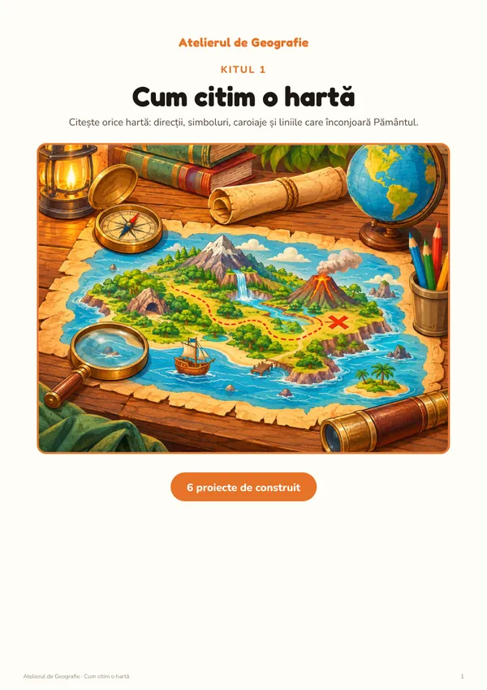
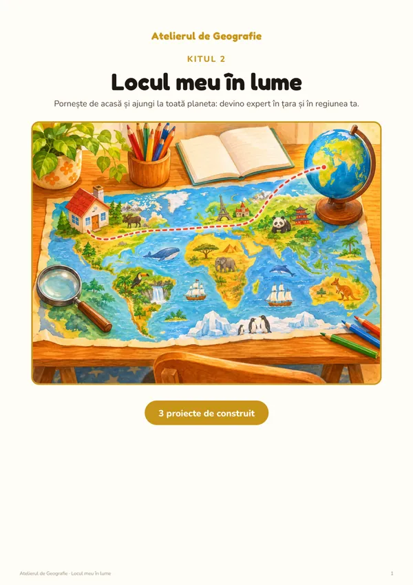
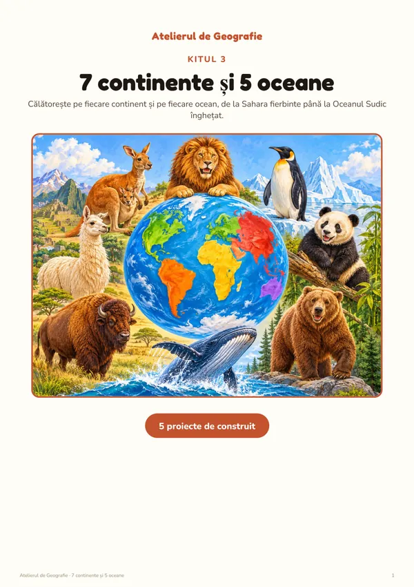
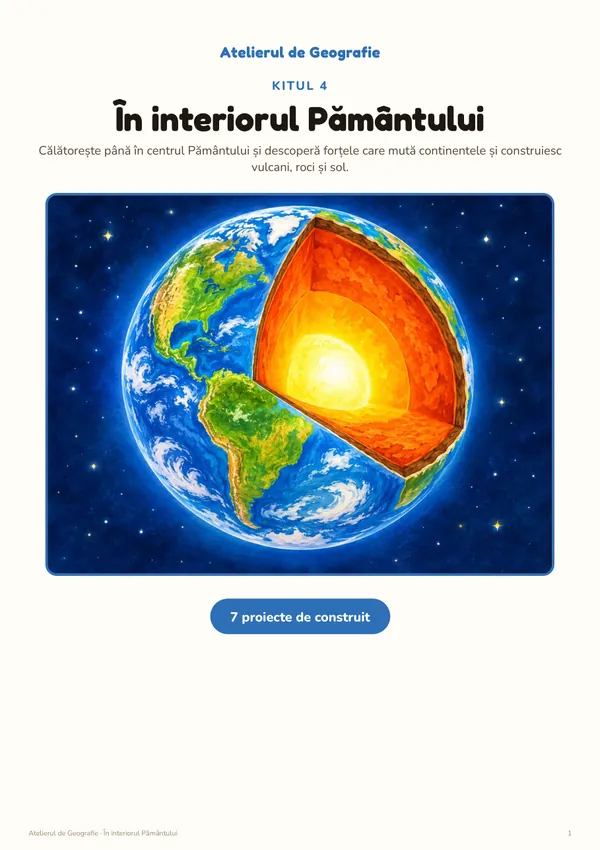
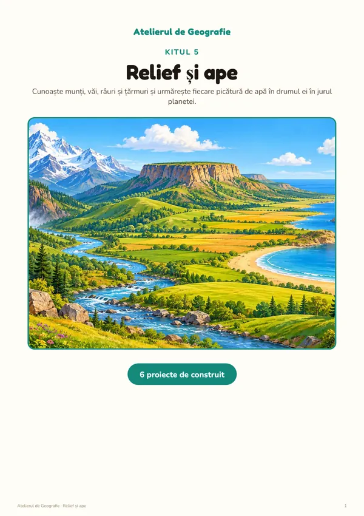
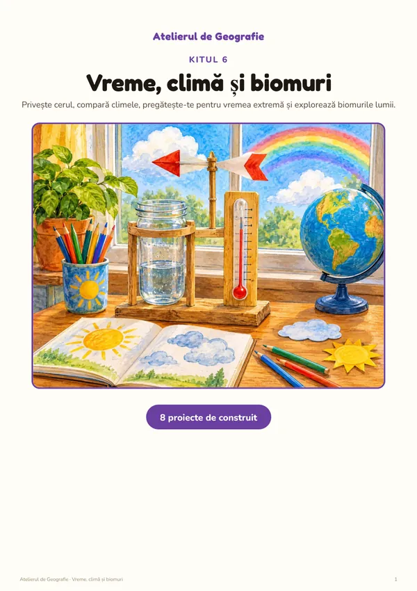
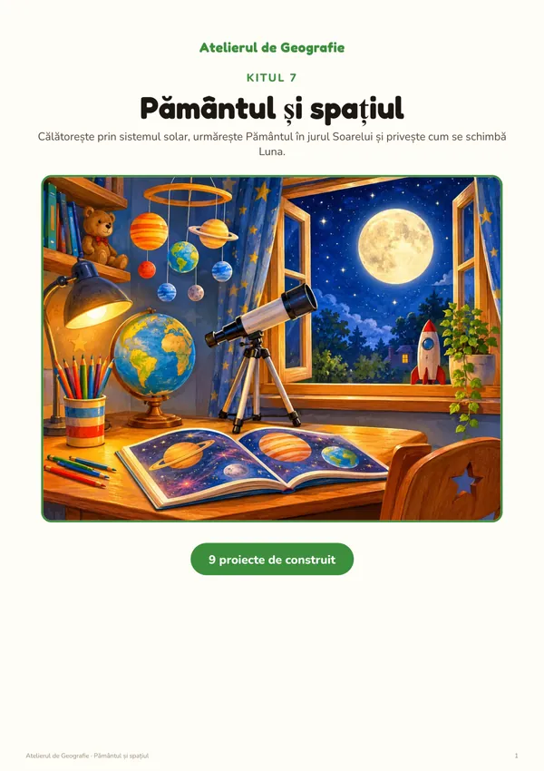
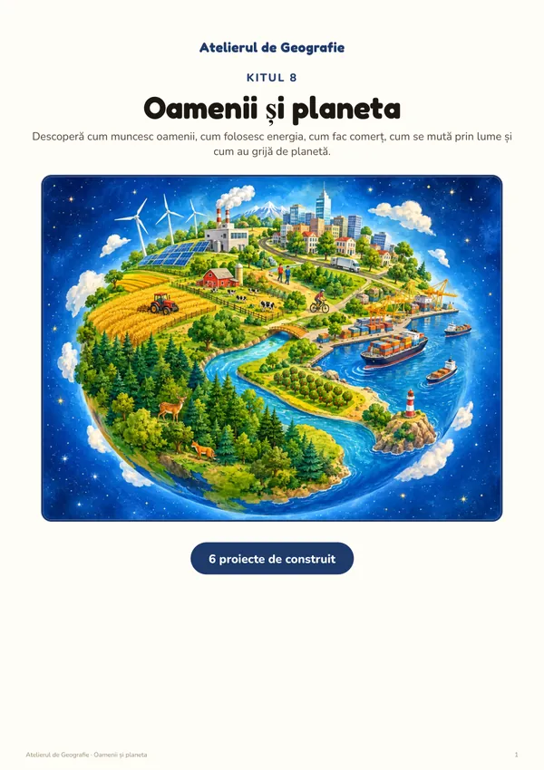

🌍
Bonus
▶ JoacăOcolul Lumii
Jocul de geografie pentru clasă sau acasă, pe calculator, tabletă sau telefon. 6 categorii: țări și capitale, limbile lumii, râuri și oceane, lanțuri muntoase, monumente celebre, cultură și curiozități.


Kitul 3
7 continente și 5 oceane
22 de pagini ⬇ Descarcă · color⬇ Descarcă · de coloratdeschide în browser
Kitul 4
În interiorul Pământului
28 de pagini ⬇ Descarcă · color⬇ Descarcă · de coloratdeschide în browser

Kitul 6
Vreme, climă și biomuri
28 de pagini ⬇ Descarcă · color⬇ Descarcă · de coloratdeschide în browser

Sfat pentru tipărire
Tipărește pe hârtie A4. Pentru machetele 3D, ideală este o hârtie mai groasă (160–200 g/m²), dar merge și hârtia obișnuită.
Pasul următor
Începe cu kitul 1 sau cu tema pe care o predai acum. Fiecare kit începe cu un ghid pentru profesor.